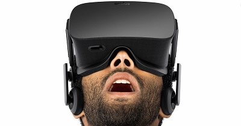

O que é
O Oculus Rift cria uma visualização em 3D estereoscópico com excelente profundidade, escala e paralaxe. Ao contrário de 3D em uma televisão ou em um filme, isso é conseguido através da apresentação de imagens únicas e paralelas para cada olho. Esta é a mesma maneira que seus olhos percebem imagens do mundo real, criando uma experiência muito mais natural e confortável.
Especificações Técnicas
Tabela Técnica do Oculus Rift Tela:OLED de 5,6 polegadas Frequência: 1000 Hz Conectividade: HDMI, USB e DVI Sensores Internos: acelerômetro, giroscópio 3-axis e magnetômetrosComo funciona
O Oculus Rift usa tecnologia de rastreamento personalizado para fornecer ultra-baixa latência de rastreamento 360° de sua visão tridimensional, permitindo que você facilmente olhar ao redor do mundo virtual, tal como faria na vida real. Cada movimento sutil de sua cabeça é monitorado em tempo real, criando uma experiência natural e intuitiva.
O que você pode fazer com o Oculus Rift
Assista a filme 3D direto de seu PC ou celular com conexão DVI ou HDMI onde quer que você esteja com qualidade HD, chegou a sua vez de desfrutar ou desenvolver aplicativos e jogos para a nova era de imersão 3D.
[AQUI ENTRA UM VÍDEO]